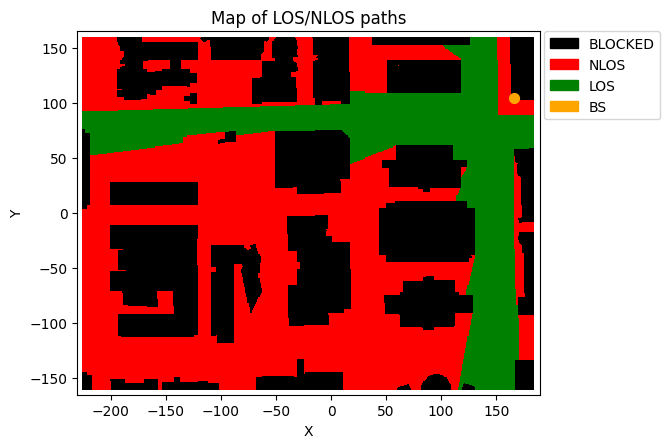
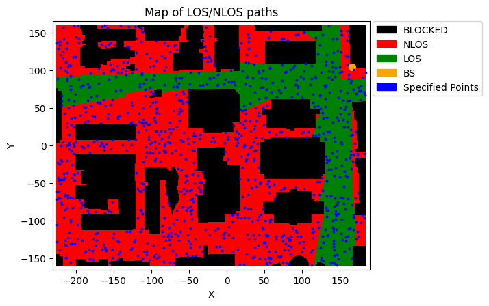
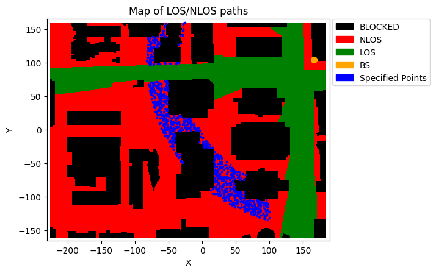

Creating random MIMO Channel Matrices from a DeepMimo Scenario
[1]:
import numpy as np
import os, time
import matplotlib.pyplot as plt
from neoradium import DeepMimoData, Carrier, Trajectory, TrjChannel, AntennaPanel, random
[2]:
# Replace this with the folder on your computer where you store DeepMIMO scenarios
dataFolder = "/data/RayTracing/DeepMIMO/Scenarios/V4/"
DeepMimoData.setScenariosPath(dataFolder)
# Get information about a scenario:
DeepMimoData.showScenarioInfo("asu_campus_3p5")
Scenario: asu_campus_3p5
File Version: 4.0.0a3
Carrier Frequency: 3.5 GHz
Data Folder: /Users/shahab/data/RayTracing/DeepMIMO/Scenarios/V4/asu_campus_3p5/
UE Grids: (1)
rx_grid: ID:0, Num UEs:131,931, xRange:-225.55..184.45, yRange:-160.17..159.83
Base Stations: (1)
BS: ID:1, Position:(166.00,104.00,22.00)
[3]:
# Using the above information we create a DeepMimoData object for user grid 0 and base station 1:
deepMimoData = DeepMimoData("asu_campus_3p5", baseStationId=1, gridId=0)
deepMimoData.print()
DeepMimoData Properties:
Scenario: asu_campus_3p5
Version: 4.0.0a3
UE Grid: rx_grid
Grid Size: 411 x 321
Base Station: BS (at [166. 104. 22.])
Total Grid Points: 131,931
UE Spacing: [1. 1.]
UE bounds (xyMin, xyMax) [-225.55 -160.17], [184.45 159.83]
UE Height: 1.50
Carrier Frequency: 3.5 GHz
Num. paths (Min, Avg, Max): 0, 6.21, 10
Num. total blockage: 46774
LOS percentage: 19.71%
[4]:
# Draw a map of the scenario showing the Line-Of-Sight (LOS) vs Non-Line-Of-Sight (NLOS) communication
# between the UEs and the base station.
deepMimoData.drawMap("LOS-NLOS") # Also try "1stPathDelays" or "1stPathPowers"
[4]:
(<Figure size 742.518x471.734 with 1 Axes>,
<Axes: title={'center': 'Map of LOS/NLOS paths'}, xlabel='X', ylabel='Y'>)

Create 1000 channels for a SISO communication (All default settings)
[5]:
# First create a carrier object with 25 PRBs and 15KHz subcarrier spacing
carrier = Carrier(startRb=0, numRbs=25, spacing=15)
# Now create the generator with default settings
chanGen = deepMimoData.getChanGen(1000, carrier.curBwp)
# Draw the selected points on the map.
deepMimoData.drawMap("LOS-NLOS", chanGen.pointIdx)
# create the channel matrices
allChannels = np.stack([chan for chan in chanGen])
print(f"shape of 'allChannels': {allChannels.shape}")
shape of 'allChannels': (1000, 14, 300, 1, 1)

Create 1000 MIMO channels with more filters
[6]:
# Create 1000 MIMO channel matrices
chanGen = deepMimoData.getChanGen(1000,
carrier.curBwp, # Bandwidth Part
los=False, # Include only non-line-of-sight channels
minDist=200, # With distances to the base station between 200
maxDist=250, # and 250 meters
maxX=100, # and maximum x-coordinate of 100 meters
ueSpeed=(10,20), # UE speed between 10 and 20 mps
ueDir=[0, 270], # Going right or down
txAntenna=AntennaPanel([2,4], polarization="x"), # 16 TX antenna
txOrientation=[180,0,0], # Facing to the left
rxAntenna=AntennaPanel([1,2], polarization="x"), # 4 RX antenna
seed=123) # Reproducible results
# Draw the selected points on the map.
deepMimoData.drawMap("LOS-NLOS", chanGen.pointIdx)
# create the channel matrices
allChannels = np.stack([chan for chan in chanGen])
print(f"shape of 'allChannels': {allChannels.shape}")
shape of 'allChannels': (1000, 14, 300, 4, 16)

[ ]: